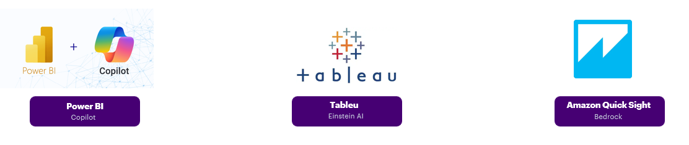

AI Data Analytics
AI Competency
AI-enabled Analytics practitioners enhance reporting, insight generation, and decision support by leveraging AI and LLM tools. They combine traditional BI methods with AI-assisted data transformation, KPI creation, anomaly detection, and automated storytelling. The role accelerates analytical tasks, improves accuracy, and enables smarter decision-making across the organisation.
Primary AI tools:

AI Role Details
Builds and governs the reporting and insight layer — dashboards, semantic models, KPI frameworks, and AI-driven analytics.
What success looks like
- AI tools are embedded in your regular workflow — report development, KPI calculation, and insight generation happen faster because of them
- Repetitive analytical tasks (data summarisation, layout suggestions, narrative generation) are automated, not manual
- AI-assisted techniques — anomaly detection, forecasting, clustering, automated insights — are applied where they add value
- Every AI-generated output is validated before it reaches a deliverable, independently at your career level
- You have built reusable prompt patterns that your team adopts for repeatable analytical processes
- Your collaboration with Data Engineering on AI-powered pipelines is active and ongoing
- Peers come to you for guidance on effective AI use in reporting and BI workflows
Mandatory Requirement (Applies to all levels)
The following training requirements are mandatory for all AI Proficiency Levels (P1–P5) and must be completed as part of role progression:
Mandatory Trainings Source
| Training | Link |
|---|---|
| Agentic AI Ecosystem Tools: Level 3A | 3A |
| Agentic AI Frameworks: Level 3B | 3B |
| Agentic AI Deep Dive: Level 4A | 4A |
These trainings are considered foundational capabilities for working with AI-assisted and agentic data engineering systems.
No proficiency level (P1–P5) can be formally considered achieved without completion of these mandatory trainings.
Career Progression
AI Proficiency Levels P1 - P4
Recommended Trainings
| P1 - AI Assisted - L12 | Training | Category | Link | ✓ |
|---|---|---|---|---|
| TQ Agentic AI | General | Udacity link | ||
| Agentic AI Ecosystem Tools: Level 3A | General | 3A | ||
| GitHub Copilot with Python | General | Workday link |
| P2 - AI Accelerated - L11 | Training | Category | Link | ✓ |
|---|---|---|---|---|
| Reinvention with Agentic AI | General | Workday link | ||
| Agentic AI Frameworks: Level 3B | General | 3B | ||
| Smart Narratives, Q&A Visuals & Copilot in Power BI | Power BI | Workday link | ||
| Extend data insights with Power BI Copilot | Power BI | Workday link |
| P3 - Agentic Data Analytics - L10 · L9 | Training | Category | Link | ✓ |
|---|---|---|---|---|
| Agentic AI Deep Dive: Level 4A | General | 4A | ||
| Advanced Features: Copilot for Smart Narratives & DAX Queries | based on the delivery role | Workday | ||
| Amazon Q: Generative AI-powered Assistant Learning Plan | based on the delivery role | AWS | ||
| Tableau Agentic Analytics | based on the delivery role | Tableau |
| P4 - AI Governed - L8 · L7 | Training | Category | Link | ✓ |
|---|---|---|---|---|
| Level 4B - Agentic AI in TDLC for Delivery Practitioners | 4B | Workday link | ||
| Azure AI and Data Agents | based on the delivery role | Udacity | ||
| Snowflake Cortex and Data Agents | based on the delivery role | Workday | ||
| Databricks AI and Data Intelligence | based on the delivery role | Workday | ||
| AWS Bedrock and Agentic Workflows | based on the delivery role | Udacity | ||
| Google Cloud AI and Data Agents | based on the delivery role | Udacity |
Mandatory Training: Complete all required core trainings. Role-Based Training: Complete the trainings relevant to your delivery role, then apply what you’ve learned on your project to mark them complete. Optionals build your progress score.
AI Proficiency Levels P5
✦ Architect · recognised enterprise authority
At this level
Defines enterprise-wide AI analytics practices and governance — acting as the recognised authority on AI-enabled analytics at the practice level.
- Advises leadership on AI opportunities in decision-making and reporting
- Shapes standards and best practices for responsible AI use in analytics
- Acts as the recognised authority on AI-enabled analytics — final escalation point for complex design decisions, tool selection, and governance questions
- Drives AI adoption across the analytics domain at enterprise scale
Confirming at least 3 items in the Evidence section below qualifies as P5.
Evidence
P5 is demonstrated through strategic contribution, not course completion. Mark the items that apply to your experience.
| Evidence | ✓ |
|---|---|
| Contributed to an RFP, proposal, or strategic initiative where AI was part of the solution design | |
| Proposed or co-authored an AI integration framework, template, or standard adopted by a team or client | |
| Defined or shaped an AI data readiness model or governance approach for a client or internal use | |
| Coached practitioners through an AI competency milestone (P2→P3 or P3→P4) in a structured way | |
| Presented an AI analytics strategy, approach, or recommendation to client leadership or a senior forum | |
| Owned or co-led the AI workstream on a delivery engagement — accountable for standards and quality | |
| Contributed to a community of practice, internal article, or external forum on AI in analytics |
Career Progression
P1 — AI Assisted
Uses built-in AI features with senior guidance. Follows templates. Validates all outputs before applying.
- Foundational Power BI and reporting work under guidance
- Uses Copilot for code generation with senior validation
- Learns data model concepts and basic report quality patterns
P2 — AI Accelerated
Delivers reports independently. Uses AI tools regularly. Validates AI output without senior oversight.
- Independent report delivery with DAX and M ownership
- Uses Power BI Copilot and Fabric Copilot regularly in the development workflow
- Adapts AI-generated DAX or M code to meet specific business requirements
P3 — Agentic AI
Owns the report lifecycle end-to-end. Introduces AI tooling into team workflows. Coaches peers.
- Applies advanced Copilot features and AI-assisted insight generation
- Designs agentic analytical workflows for repeatable processes
- Coaches peers on effective AI use in reporting and BI workflows
P3 — Agentic AI
Deep BI architecture expert. Sets reporting standards. Builds reusable AI frameworks.
- Deep expert in BI architecture and analytics
- Sets reporting standards and designs agentic analytical workflows
- Builds reusable prompt frameworks and coaches peers
P4 — Integrated AI
Leads the analytics stream. Embeds AI tooling into team standards and delivery processes.
- Owns delivery and platform decisions for the analytics stream
- Embeds AI tooling into team standards, review processes, and report templates
- Owns architecture for AI analytics initiatives
P4 — Integrated AI
Sets analytical direction. Drives AI adoption strategy. Advises leadership on AI opportunities.
- Sets analytical direction and owns domain standards
- Drives AI adoption strategy across the practice
- Advises leadership on AI opportunities and represents team in external forums
P5 — Governed AI
Defines enterprise-wide AI analytics strategy and governance. Recognised authority in the field.
- Defines enterprise-wide AI analytics strategy and standards
- Shapes vision for data-to-insight governance and responsible AI
- Acts as recognised authority on AI-enabled analytics at the practice level
Legend
mandatory · optional
- Mandatory courses must all be completed for the level to show as achieved (green bar).
- Optional courses count toward your progress and stack — completing enough optionals can satisfy the level threshold even if a mandatory is missing.
- At P3 and P4 the threshold is 4 courses total (any mix of mandatory + optional across all tracks).
- Your progress is saved in the browser. Ticking a box here does not auto-update the team tracker — use the Power Apps link at the bottom to officially record your level.
- Complete the courses for your primary tool track (Power BI, Tableau, or QuickSight). Cross-track optionals apply regardless of track.
This list will be expanded as the platform matures and new tools are validated.
My AI Proficiency Level
Your recommended level
Based on the courses and evidence you have confirmed above, your recommended level is calculated automatically.
The link below opens the Power Apps tool where you can officially update your level in the team tracker. Level calculation uses the Power BI track for P3 and P4.